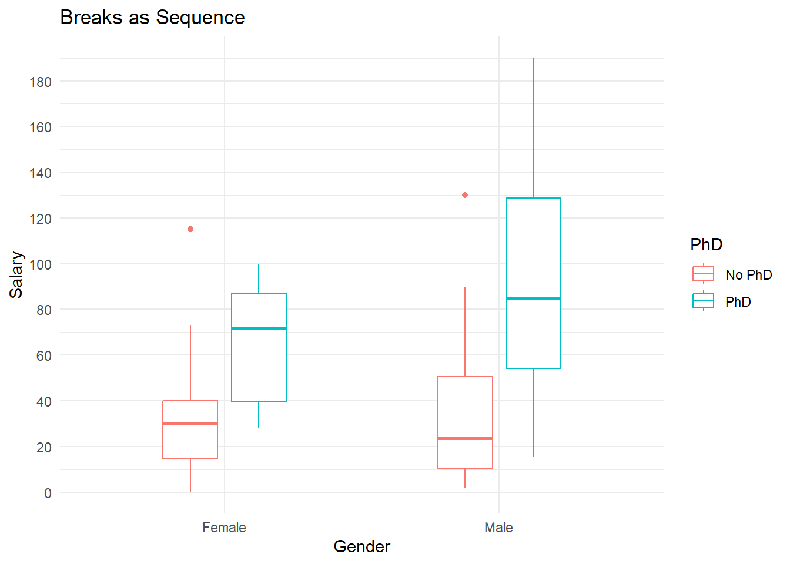
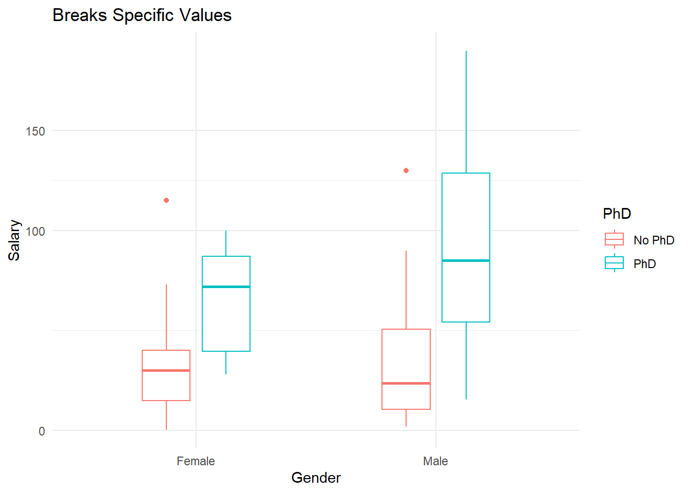
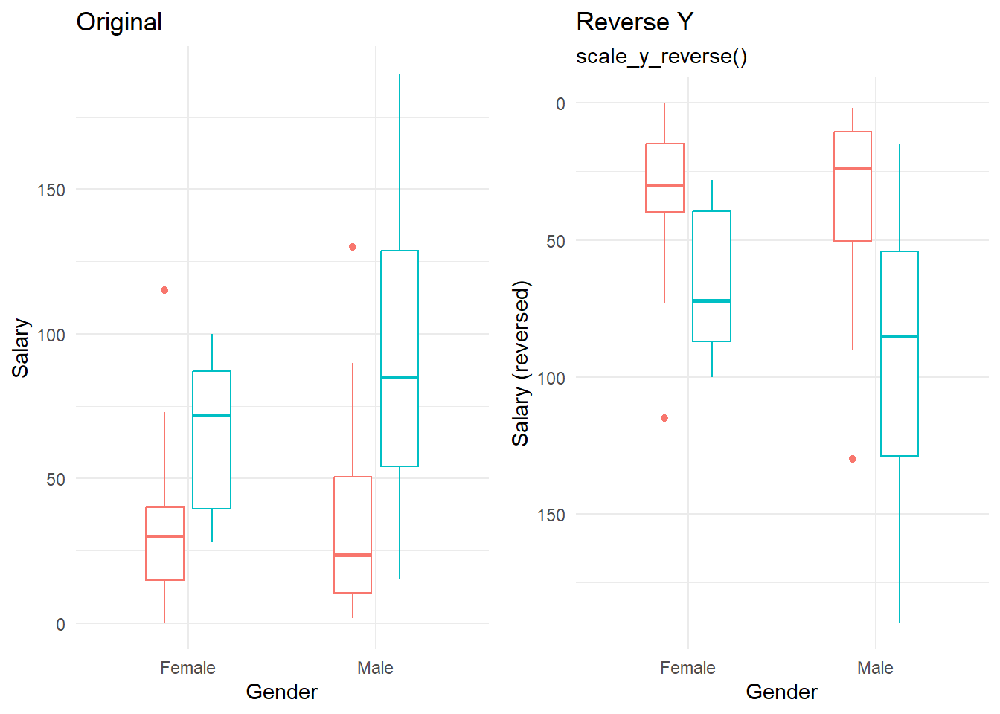
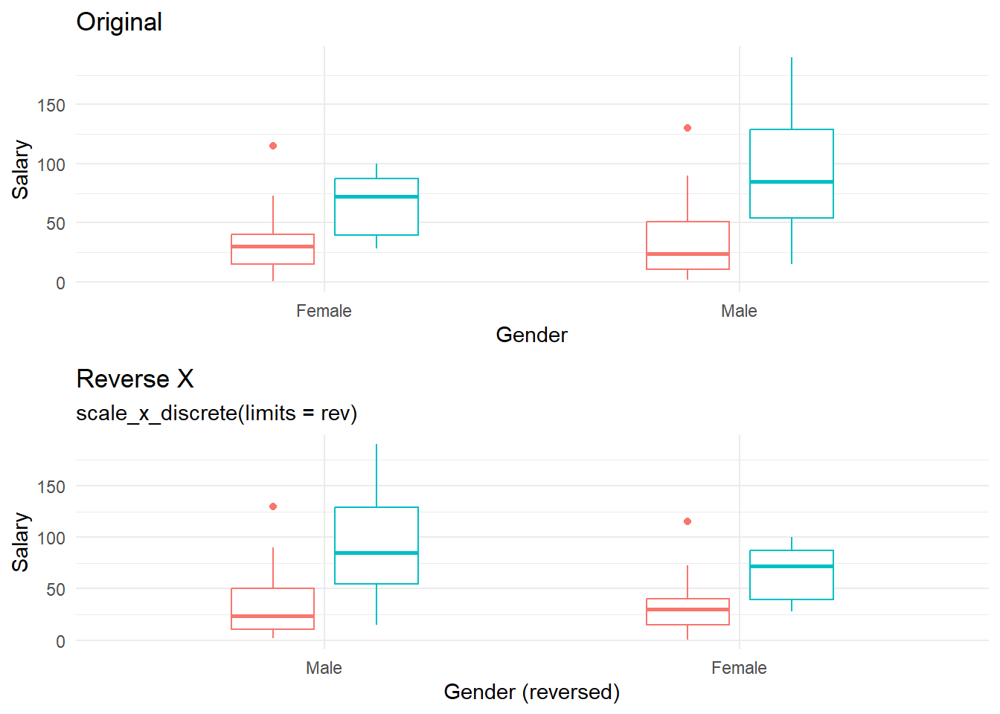
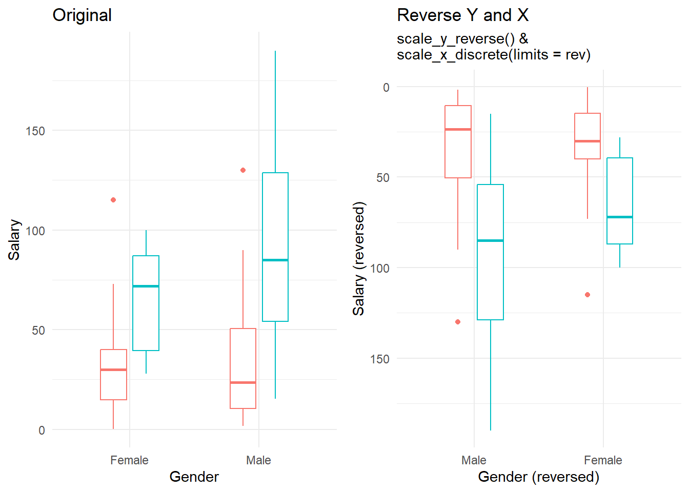

Axis Range, Breaks, and Ordering
This section looks at ways of adjusting the overall scale of each axis (e.g. instead of going from 0 to 100 going from 40 to 60) as well as reversing the order (e.g. instead of going from 1 to 100 going from 100 to 1).
default = gf_histogram(~price, data = diamonds) %>%
gf_labs(title = "Default", y = "")
clipped = gf_histogram(~price, data = diamonds) %>%
gf_labs(title = "Adjust Range", y = "") %>%
gf_refine(scale_x_continuous(limits = c(5000, 15000)))
breaksMajor = gf_histogram(~price, data = diamonds) %>%
gf_labs(title = "Adjust Major Breaks", y = "") %>%
gf_refine(scale_x_continuous(breaks = breaks_width(2000)),
scale_y_continuous(breaks = c(0,7500,15000)))
reverse = gf_histogram(~price, data = diamonds) %>%
gf_labs(title = "Reverse Scale", y = "") %>%
gf_refine(scale_x_reverse())
grid.arrange(default, clipped, breaksMajor, reverse, ncol = 1)1 Adjusting Axis Range
1.1 Beyond the Data Range
If you are adjusting the axis range beyond the data - you can use the gf_lims( ) command to adjust. This is most helpful when you’re trying to match axis to compare.
Example: gf_lims(x=c(0,10), y = c(10,100))
The following dotplots are OK, but it might be helpful to match up the equivalent feet to meter measurement so the 43 ft and 13.1 meters align.
feetDefault = gf_dotplot(~GuessedLength, data = subset(lengths, Unit == "Feet"), binwidth = 1, alpha = 0.3) %>%
gf_labs(x = "Guessed Feet", title = "Guessed Feet", y = NULL) %>%
gf_vline(xintercept = 43, alpha = 0.7, linetype = "dashed") %>%
gf_text(x = 44, y = .75, label = "Actual Length = 43 ft", hjust = -0.1, size = 4) %>%
gf_theme(axis.text.y = element_blank(), axis.ticks.y = element_blank())
# Meter graph
meterDefault = gf_dotplot(~GuessedLength, data=subset(lengths, Unit == "Meter"), binwidth = 0.5, alpha = 0.3) %>%
gf_labs(x = "Guessed Meters", title = "Guessed Meters", y = NULL) %>%
gf_vline(xintercept = 13.1, alpha = 0.7, linetype = "dashed") %>%
gf_text( x = 14, y = .75, label = "Actual Length = 13.1 m", hjust=-0.1, size = 4) %>%
gf_theme(axis.text.y = element_blank(), axis.ticks.y = element_blank())
grid.arrange(feetDefault, meterDefault, nrow = 2)In the dotplots below, the axis are adjusted so they span the same equivalent space. It is more clear that the 43 ft = 13.1 meters.
feet = gf_dotplot(~GuessedLength, data = subset(lengths, Unit == "Feet"), binwidth = 2, alpha = 0.3) %>%
gf_labs(x = "Guessed Feet", title = "Guessed Feet: Adjusted", y = NULL) %>%
gf_lims(x = c(0, 147)) %>%
gf_vline(xintercept = 43, alpha = 0.7, linetype = "dashed") %>%
gf_text(x = 44, y = .75, label = "Actual Length = 43 ft", hjust = -0.1, size = 4) %>%
gf_theme(axis.text.y = element_blank(), axis.ticks.y = element_blank())
# Meter graph
meter = gf_dotplot(~GuessedLength, data=subset(lengths, Unit == "Meter"), binwidth = 0.5, alpha = 0.3) %>%
gf_labs(x = "Guessed Meters", title = "Guessed Meters: Adjusted", y = NULL) %>%
gf_refine(coord_cartesian(xlim = c(0, 45))) %>%
gf_vline(xintercept = 13.1, alpha = 0.7, linetype = "dashed") %>%
gf_text( x = 14, y = .75, label = "Actual Length = 13.1 m", hjust=-0.1, size = 4) %>%
gf_theme(axis.text.y = element_blank(), axis.ticks.y = element_blank())
grid.arrange(feet, meter, nrow = 2)1.2 Within Data Range
If we are adjusting axis within the range of data, we need to be careful what we do with points that fall outside that range. For example, do we want to just ignore them and zoom in or do we want to essentially omit them from the dataset/consideration.
There are 2 ways of adjusting axis scales (in terms of how they treat data). One way is called “without clipping” where all data is preserved, but we adjust the axis to essentially zoom in or out while keeping all data preserved. Alternatively, we can adjust “with clipping” where all data not in the area specified is no longer accounted for. This will matter if you’re overlaying things like linear model trendlines. The images below come from the ggplot2 cheat-sheet and I think illustrate things well.

1.2.1 Adjust Scales Without Clipping
To adjust scales without removing unseen data points, use a gf_refine( ) statement with coord_cartesian( ) specifications.
Example: gf_plot( ) %>% gf_refine(coord_cartesian(xlim = c(0, 100), ylim = c(10, 20)))
original = gf_point(Salary~Age, data = SalaryGender, color = ~as.factor(PhD)) %>%
gf_labs(color = "PhD", title = "All Data") %>%
gf_refine(scale_color_discrete(labels = c("0" = "No PhD", "1" = "PhD"))) %>%
gf_lm() %>%
gf_theme(guides(color = guide_legend(reverse = TRUE))) %>%
gf_theme(legend.position = c(0.2, 0.9))
noclipping = gf_point(Salary~Age, data = SalaryGender, color = ~as.factor(PhD)) %>%
gf_labs(color = "PhD", title = "Zoom In Without Clipping") %>%
gf_refine(
scale_color_discrete(labels = c("0" = "No PhD", "1" = "PhD")),
coord_cartesian(xlim = c(40, 80))) %>%
gf_lm() %>%
gf_theme(guides(color = guide_legend(reverse = TRUE))) %>%
gf_theme(legend.position = c(0.2, 0.9))
grid.arrange(original, noclipping, nrow = 1)## Warning: Using the `size` aesthetic with geom_line was deprecated in ggplot2 3.4.0.
## ℹ Please use the `linewidth` aesthetic instead.
## This warning is displayed once every 8 hours.
## Call `lifecycle::last_lifecycle_warnings()` to see where this warning was
## generated.1.2.2 Adjust Scales With Clipping
There are a few ways you can adjust the scales with clipping. For example, you can merely create a subset and only use that data (by default, clipping out the other data). Alternatively you can use a gf_lims( ) command OR a scale_x_continuous( ) command within a refine statement.
Option 1: gf_lims(x = c(40,80)) or gf_lims(x = c(65, NA), y = c(3, NA))
Option 2: gf_refine(scale_x_continuous(limits = c(40,80)))
clipping1 = gf_point(Salary~Age, data = SalaryGender, color = ~as.factor(PhD)) %>%
gf_labs(color = "PhD", title = "Zoom In With Clipping", subtitle = "Using gf_lims()") %>%
gf_refine(scale_color_discrete(labels = c("0" = "No PhD", "1" = "PhD"))) %>%
gf_lm() %>%
gf_lims(x = c(40,80)) %>%
gf_theme(guides(color = guide_legend(reverse = TRUE))) %>%
gf_theme(legend.position = c(0.2, 0.9))
grid.arrange(noclipping, clipping1, nrow = 1)clipping2 = gf_point(Salary~Age, data = SalaryGender, color = ~as.factor(PhD)) %>%
gf_labs(color = "PhD", title = "Zoom In With Clipping", subtitle = "Using gf_refine()") %>%
gf_refine(
scale_color_discrete(labels = c("0" = "No PhD", "1" = "PhD")),
scale_x_continuous(limits = c(40,80))) %>%
gf_lm()%>%
gf_theme(guides(color = guide_legend(reverse = TRUE))) %>%
gf_theme(legend.position = c(0.2, 0.9))
grid.arrange(noclipping, clipping1, clipping2, nrow = 1)1.3 Adjusting Categorical Scales
Adjusting an axis if we have categorical data can be done the same way we adjust a no-clipping continuous axis, but have to realize that the first category on our x-axis is at 1. So the boxplot (below) has a default x-range from (1,2). If we want to have a wider range, we can spread to (0,3).
Example: gf_refine(coord_cartesian(xlim = c(0,3)))
SalaryGender$Gender = recode(SalaryGender$Gender, '0' = "Female", '1' = "Male")
noshift = gf_boxplot(Salary~Gender, data = SalaryGender, color = ~as.factor(PhD), width = 0.4, position= position_dodge(.5)) %>%
gf_labs(color = "PhD", x = "Gender", title = "Default Range") %>%
gf_refine(scale_color_discrete(labels = c("0" = "No PhD", "1" = "PhD")))
spread = gf_boxplot(Salary~Gender, data = SalaryGender, color = ~as.factor(PhD), width = 0.4, position= position_dodge(.5)) %>%
gf_labs(color = "PhD", x = "Gender", title = "Spread X Axis Out") %>%
gf_refine(scale_color_discrete(labels = c("0" = "No PhD", "1" = "PhD")),
coord_cartesian(xlim = c(0,3)))
grid.arrange(noshift, spread, ncol = 1)
If you wanted to add a space for another label, one can be added through the scale_*_discrete command.
EXample: scale_x_discrete(limits = c(“Female”, “Male”, “Additional Label”))
gf_boxplot(Salary~Gender, data = SalaryGender, color = ~as.factor(PhD), width = 0.4, position= position_dodge(.5)) %>%
gf_labs(color = "PhD", x = "Gender", title = "Additional Label Added") %>%
gf_refine(scale_color_discrete(labels = c("0" = "No PhD", "1" = "PhD")),
scale_x_discrete(limits = c("Female", "Male", "Additional Label"))) 
1.4 Exapanding Visual Range
In addition to all methods of adjusting the axis ranges, we can also adjust the plot field using the exapnd option in scale_*continuous or scale*_discrete.
Example (discrete): scale_x_discrete(expand = expansion(add = 2))
Example (continuous): scale_y_continuous(exapnd = expansion(add = 10))
gf_boxplot(Salary~Gender, data = SalaryGender, color = ~as.factor(PhD), width = 0.4, position= position_dodge(.5)) %>%
gf_labs(color = "PhD", x = "Gender", title = "Spread X & Y Axis Out") %>%
gf_refine(scale_color_discrete(labels = c("0" = "No PhD", "1" = "PhD")),
scale_x_discrete(expand = expansion(add = 2)),
scale_y_continuous(expand = expansion(add = 50)))For more details, the ggplot book also describes adjusting scales in a variety of ways.
2 Breaks
To adjust scale breaks, use the breaks command inside the scale_XXX_continuous command.
Most breaks will likely be what are known as “major breaks” (the numbers on the axis). One can also adjust the minor breaks (reference lines within the graph).
2.1 Adjust Major Breaks
A few ways to adjust major breaks include specifying a sequence of values (or other function of values), manually entering values, or specifying the width of the breaks. Here are a few highlights to each of these methods:
Sequence: gf_refine(scale_x_continuous(breaks = c(seq(1:13))))
Specific Values: gf_refine(scale_x_continuous(breaks = c(1950, 2000)))
Specific width: scale_x_continuous(breaks = breaks_width(2000))
Specific width with offset: scale_x_continuous(breaks = breaks_width(2000, offset = 100))
gf_boxplot(Salary~Gender, data = SalaryGender, color = ~as.factor(PhD), width = 0.4, position= position_dodge(.5)) %>%
gf_labs(color = "PhD", x = "Gender", title = "Breaks as Sequence") %>%
gf_refine(
scale_color_discrete(labels = c("0" = "No PhD", "1" = "PhD")),
scale_y_continuous(breaks = c(seq(0,200, by = 20))))
gf_boxplot(Salary~Gender, data = SalaryGender, color = ~as.factor(PhD), width = 0.4, position= position_dodge(.5)) %>%
gf_labs(color = "PhD", x = "Gender", title = "Breaks Specific Values") %>%
gf_refine(
scale_color_discrete(labels = c("0" = "No PhD", "1" = "PhD")),
scale_y_continuous(breaks = c(0, 100, 150)))
noOffset = gf_histogram(~price, data = diamonds) %>%
gf_labs(title = "Adjust Major Breaks", subtitle = "breaks_width: No offset", y = "") %>%
gf_refine(scale_x_continuous(breaks = breaks_width(4000)),
scale_y_continuous(breaks = c(0,7500,15000)))
offsetPos = gf_histogram(~price, data = diamonds) %>%
gf_labs(title = "Adjust Major Breaks", subtitle = "breaks_width with offset +500", y = "") %>%
gf_refine(scale_x_continuous(breaks = breaks_width(4000, offset = 500)),
scale_y_continuous(breaks = c(0,7500,15000)))
offsetNeg = gf_histogram(~price, data = diamonds) %>%
gf_labs(title = "Adjust Major Breaks", subtitle = "breaks_width with offset -500", y = "") %>%
gf_refine(scale_x_continuous(breaks = breaks_width(4000, offset = -500)),
scale_y_continuous(breaks = c(0,7500,15000)))
grid.arrange(noOffset, offsetPos, offsetNeg)2.2 Adjust Minor Breaks
gf_histogram(~price, data = diamonds) %>%
gf_labs(title = "Adjust Minor Breaks (X Axis)", subtitle = "Specific Values", y = "") %>%
gf_refine(scale_x_continuous(breaks = breaks_width(10000), minor_breaks = c(3000,7000,15000)),
scale_y_continuous(breaks = c(0,7500,15000))) %>%
gf_theme(theme_minimal())gf_histogram(~price, data = diamonds) %>%
gf_labs(title = "Adjust Minor Breaks (Y Axis)", subtitle = "Sequence of Values", y = "") %>%
gf_refine(scale_x_continuous(breaks = breaks_width(4000)),
scale_y_continuous(breaks = c(0,7500,15000), minor_breaks = seq(0,20000, by = 2000))) %>%
gf_theme(theme_minimal())gf_histogram(~price, data = diamonds) %>%
gf_labs(title = "Adjust Minor Breaks (X Axis)", subtitle = "breaks_width", y = "") %>%
gf_refine(scale_x_continuous(breaks = breaks_width(4000), minor_breaks = breaks_width(1000)),
scale_y_continuous(breaks = c(0,7500,15000))) %>%
gf_theme(theme_minimal())gf_histogram(~price, data = diamonds) %>%
gf_labs(title = "Adjust Minor Breaks (Both Axis)", subtitle = "minor_breaks_n", y = "") %>%
gf_refine(scale_x_continuous(breaks = breaks_width(4000), minor_breaks = minor_breaks_n(2)),
scale_y_continuous(breaks = c(0,7500,15000), minor_breaks = minor_breaks_n(10))) %>%
gf_theme(theme_minimal())2.3 Binned Scales
If you have numeric scales and want to bin the scales, there are a few ways you can approach this. You can bin (or “cut”) the data itself, manually create categories, or you can just bin the axis. Examples can be found in the ggplot book.
3 Reverse Scales
Reversing scales will have different codes based on the type of data you have. The general code to reverse scales is:
Continuous: gf_refine( scale_y_reverse( ) )
Discrete: gf_refine( scale_y_discrete( limits = rev ) )
original = gf_boxplot(Salary~Gender, data = SalaryGender, color = ~as.factor(PhD), width = 0.4, position= position_dodge(.5), show.legend = FALSE) %>%
gf_labs(color = "PhD", x = "Gender", title = "Original") %>%
gf_refine(
scale_color_discrete(labels = c("0" = "No PhD", "1" = "PhD")))
y.reverse = gf_boxplot(Salary~Gender, data = SalaryGender, color = ~as.factor(PhD), width = 0.4, position= position_dodge(.5), show.legend = FALSE) %>%
gf_labs(color = "PhD", x = "Gender", title = "Reverse Y", subtitle = "scale_y_reverse()", y = "Salary (reversed)") %>%
gf_refine(
scale_color_discrete(labels = c("0" = "No PhD", "1" = "PhD")),
scale_y_reverse()) # Reverse Y axis continuous scale
grid.arrange(original, y.reverse, nrow = 1)
x.reverse = gf_boxplot(Salary~Gender, data = SalaryGender, color = ~as.factor(PhD), width = 0.4, position= position_dodge(.5), show.legend = FALSE) %>%
gf_labs(color = "PhD", x = "Gender (reversed)", title = "Reverse X", subtitle = "scale_x_discrete(limits = rev)") %>%
gf_refine(
scale_color_discrete(labels = c("0" = "No PhD", "1" = "PhD")),
scale_x_discrete(limits = rev)) # Reverse X axis discrete scale
grid.arrange(original, x.reverse, ncol = 1)
both.reverse = gf_boxplot(Salary~Gender, data = SalaryGender, color = ~as.factor(PhD), width = 0.4, position= position_dodge(.5), show.legend = FALSE) %>%
gf_labs(color = "PhD", x = "Gender (reversed)", title = "Reverse Y and X", subtitle = "scale_y_reverse() &\nscale_x_discrete(limits = rev) ", y = "Salary (reversed)") %>%
gf_refine(
scale_color_discrete(labels = c("0" = "No PhD", "1" = "PhD")),
scale_y_reverse(), # Reverse Y axis continuous scale
scale_x_discrete(limits = rev)) # Reverse X axis discrete scale
grid.arrange(original, both.reverse, nrow = 1)